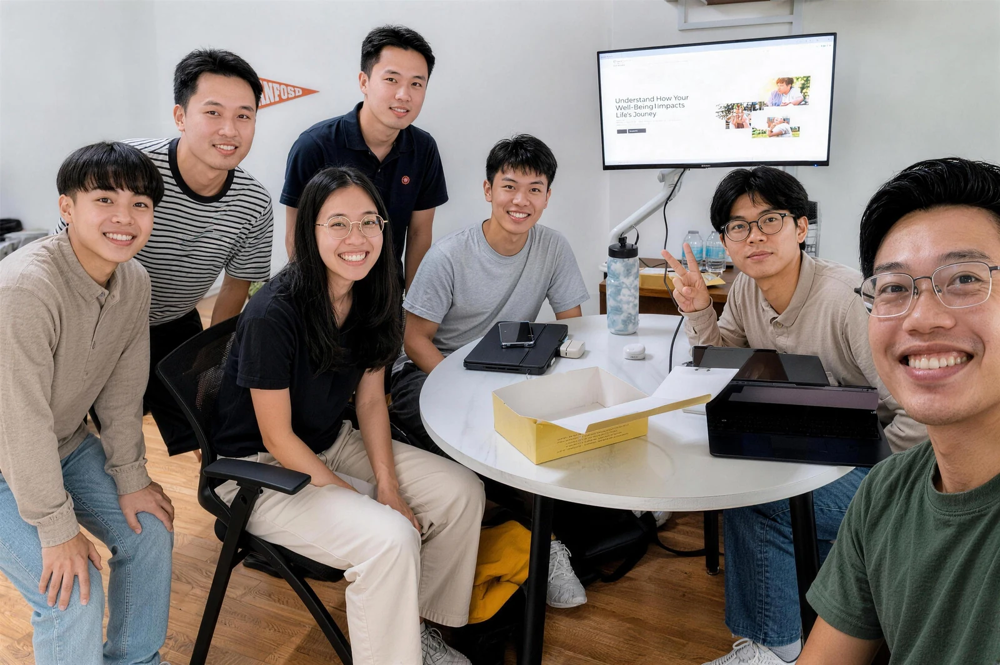
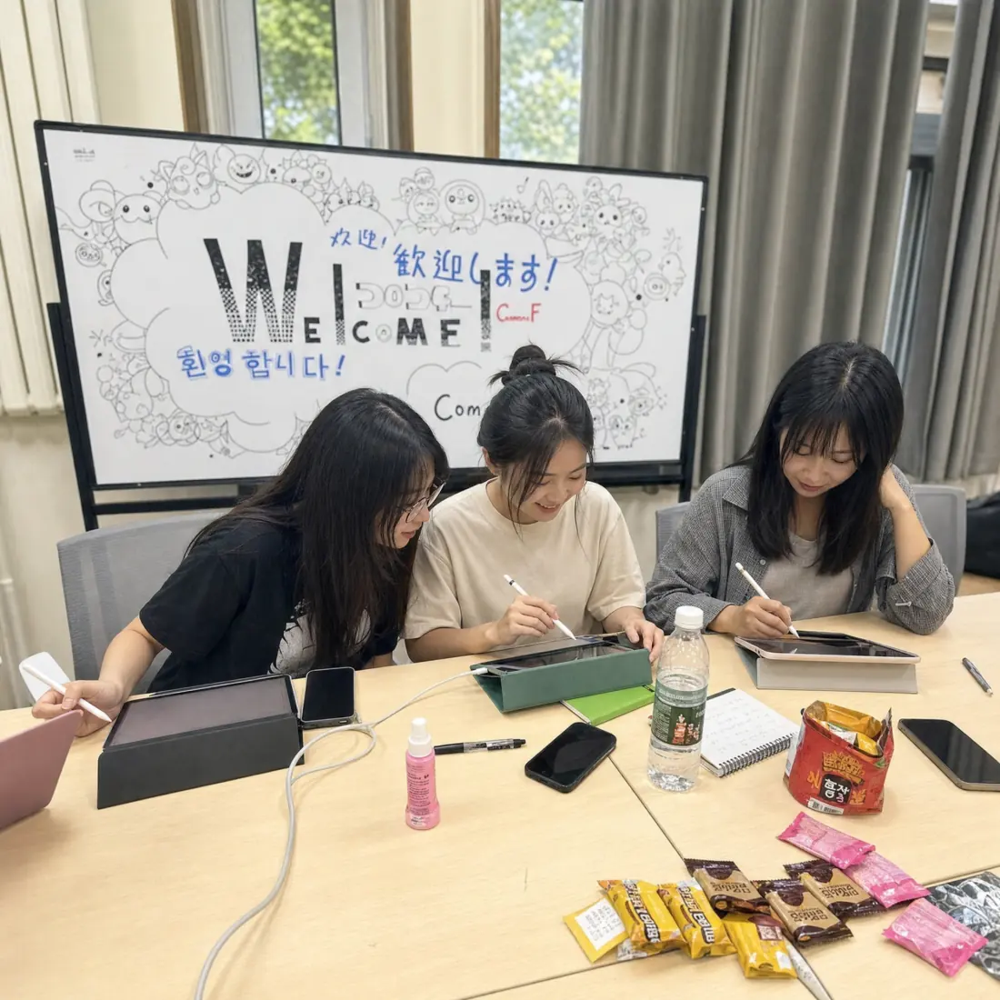

整套定制化服务
中学模块整套定制，从规划到交付全程个性化推进。
适合：力争最优结果、追求个性化交付的家庭SERVICES · 服务总览
从美本到研究生，从主申到单项，途策为每一种升学路径配备专属策略团队。
SERVICE MAP · 服务地图
把申请当成一张地图来推演：先定终点，再排路线——规划、学术、活动、文书、投递，串成一条清晰的路径。
先看清自己，再决定去哪。
产出 / 定位报告 + 选校清单
把时间花在真正影响录取的事上。
产出 / 学期化素材养成计划
让招生官在十分钟里记住你。
产出 / 全套材料 + 投递日历
多数家庭从核心美本方案启程。
从核心美本服务开始了解STRATEGY · 策略定制方法论
途策用 G7 潜能测评建立学生画像，由藤校背景 3 对 1 团队操盘，把能力模块、真实科研与文书按目标院校重新组合。策略先行，服务才不会变成流水线。

Real Companionship
真实的陪伴，而非流水线能力拆成独立模块，结合测评画像按需组合，避免套模板和无效堆料。
G7 画像报告 · 按目标院校重组的能力矩阵
规划、文书、学术导师共同判断材料价值，深知招生官标准与申请关键。
藤校背景 3 对 1 导师组 · 招生官视角审稿
真实科研、公益与文书共创，让申请从经历罗列走向有主线的个人叙事。
真实科研项目 · 贯穿全材料的个人叙事主线
申请进度、材料版本与反馈全程可视，家长与学员都知道下一步为什么做。
进度看板 · 材料版本与反馈全程留痕
CORE SERVICES · 核心服务
先想清楚要去哪里，再决定用什么——五个目标，对号入座。
Goal01
G7 潜能测评定制路线·文书训练营 3 天小班 + 2 天一对一·1v1 科研课题 6-12 个月
Goal02
评估·定位·申请·签证
一对一全真模拟面试·附赠奖学金申请指导
研究生申请→Goal03
学分衔接梯队升级
重新锚定目标院校·定制专属转学策略
本科转学→Goal04
英国·欧洲·加拿大·香港
按地区定制选校与材料·一套素材多线投递
英欧加港本科→Goal05
模块化按需单点选购·不必绑定全程服务
单项服务→还对不上号？评估是免费的，导师 24 小时内联系。
预约免费评估
CUSTOMISED SERVICES · 量身匹配
每个家庭的起点与诉求都不一样。途策按四类典型画像匹配不同的服务模式——你属于哪一种，我们就用哪一套。
SERVICE MODES · 四种模式
对号入座，找到最适合自己的那一种。
中学模块整套定制，从规划到交付全程个性化推进。
适合：力争最优结果、追求个性化交付的家庭把清晰的目标翻译成可执行的路线图，铺好每一步。
适合：目标明确、但不确定达成路径的学生一对一精英导师，补齐信息差与方法论，指到关键处。
适合：勤奋自律、缺少指导和信息的学生节奏管理与全程督导，把自驱力落成日拱一卒的执行。
适合：天资聪颖、需要督导、父母无暇陪伴的学生OUR PRINCIPLES · 服务准则
规划不是做得越多越好，而是每一步都踩在真正影响录取的关键上。
所有规划活动均经过必要性验证，只保留真正影响录取结果的关键事项，避免无效投入。
无隐形消费，无冗余任务，学生的时间与精力始终聚焦于最有价值的成长维度。
从申请启动到录取后职业发展衔接，我们持续提供成长支持，确保每一步都踩在实处。
PARTNERSHIP · 商务合作
面向学校与机构的战略合作，共建高端留学服务生态。